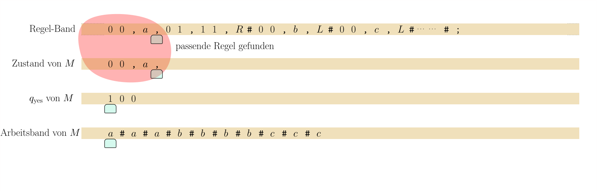
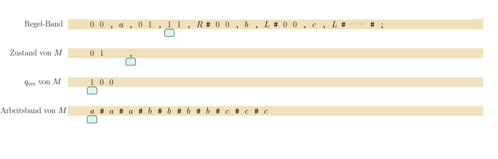
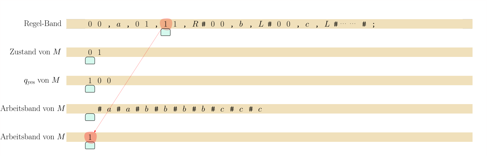

import Section from "~/components/Section";
import Paragraph from "~/components/Paragraph";
import Container from "~/components/Container";
import Carousel from "~/components/Carousel";
import NumberedTitle from "~/components/NumberedTitle";
const Article = () => {
  return (
    <Container>
      <Section
        count={46}
        title_gr="Turing-Maschinen simulieren Turing-Maschinen: die universelle Turing-Maschine"
        title_en="Turing universal"
        number={7.5}
        counter="DefCtr"
        counter="ExoCtr"
        path="/lecture-notes46.tsx">
        <div id="link-to-toc">
          <a href="../vorlesungsskript">
            Inhaltsverzeichnis
          </a>
          <a href="07-04-Turing-encoding">
            &lt;&lt; Kapitel 7.4
          </a>
        </div>
        <div
          id="link-to-overview"
          style="text-align: end">
          <a href="/">
            zur Kursübersicht
          </a>
          <a href="07-06-undecidability">
            Kapitel 7.6 &gt;&gt;
          </a>
        </div>
        <div id="rightSideWrapper">
          <div class="content">
            <div class="chapter">
              <div class="subChapter">
                <h1 class="hidden-title">
                  <span class="subChapterTitle">
                    7.5 
                    Turing-Maschinen simulieren Turing-Maschinen: die universelle Turing-Maschine
                  </span>
                </h1>
                <Paragraph>
                  Im letzten Teilkapitel haben wir gesehen, wie wir jede Turingmaschine \(M
                  \)mit
                  Eingabealphabet \(\Sigma\) codieren können als
                </Paragraph>
                $$\begin&#123;align*&#125;
                \enc(M) \in \Lambda^* \ ,
                \end&#123;align*&#125;$$
                <Paragraph>
                  also als String über dem Codierungsalphabet
                </Paragraph>
                $$\begin&#123;align*&#125;
                \Lambda := \writelambda
                \end&#123;align*&#125;$$
                <Paragraph>
                  Diese Codierungsschema enthält implizit Codierungsfunktionen
                  \(\enc_Q : Q \rightarrow \&#123;0,1\&#125;^+\) und \(\enc_\Gamma: \Gamma \rightarrow
                  \Sigma \cup \&#123;0,1\&#125;^+\),
                  die wir verwenden, um die Zustände und Arbeitszeichen von \(M\) in
                  \(\Lambda\)-Zeichen zu
                  übersetzen.
                  Für eine Konfiguration
                </Paragraph>
                $$\begin&#123;align*&#125;
                C = u_1 \dots u_m q v_1 \dots v_n
                \end&#123;align*&#125;$$
                <Paragraph>
                  der Maschine \(M\) definieren wir die Codierung von \(C\) als
                </Paragraph>
                $$\begin&#123;align*&#125;
                \enc(C) := \enc_\Gamma(u_1) \texttt&#123;#&#125; \enc_\Gamma(u_2) \dots \texttt&#123;#&#125;
                \enc_\Gamma(u_m)\texttt&#123;#&#125;
                \enc_Q(q) \texttt&#123;#&#125; \enc_\Gamma(v_1)\texttt&#123;#&#125; \dots \texttt&#123;#&#125;
                \enc_\Gamma(v_n) \in \Lambda^* \ .
                \end&#123;align*&#125;$$
                <Paragraph>
                  Das ist alles nicht besonders tiefgründig und dient allein dazu,
                  sicherzustellen, dass wir
                  die Konfigurationen von \(M\) darstellen können in dem Alphabet \(\Lambda\),
                  das
                  <i>
                    unabhängig
                  </i>
                  {" "}von \(M\) ist. Dass wir also{" "}
                  <i>
                    jede
                  </i>
                  Turingmaschine
                  \(M\) mit Eingabealphabet \(\Sigma\) und{" "}
                  <i>
                    jede
                  </i>
                  {" "}ihrer Konfigurationen
                  als Strings über{" "}
                  <i>
                    einem
                  </i>
                  {" "}festen Alphabet \(\Lambda\) darstellen
                  können.
                </Paragraph>
                <Paragraph>
                  Eine Turingmaschine simulieren heißt nun, einen String
                  \(\enc(M)\texttt&#123;;&#125;w\) mit \(w \in \Sigma^*\) zu lesen und
                  daraus den String \(\enc(\hat&#123;\delta&#125;^*_M (w))\) zu berechnen, also
                  das Ergebnis \(\hat&#123;\delta&#125;^*_M(w)\), passend codiert über dem Alphabet
                  \(\Lambda\).
                  Das zentrale Ergebnis dieses Teilkapitels ist, dass wir diese Simulation
                  selbst mit einer Turingmaschine implementieren können.
                </Paragraph>
                <div class="well container theorem">
                  <Paragraph>
                    <span class="numbered-title">
                      Theorem
                      <NumberedTitle>
                        &ensp;7.5.1{" "}
                      </NumberedTitle>
                    </span>
                    &ensp;
                    <b>
                      (Universelle
                      Turingmaschine).
                    </b>
                    {" "}Zu
                    jedem
                    endlichen Eingabealphabet \(\Sigma\) sei
                    \(\Lambda := \writelambda\) das Codierungsalphabet. Es gibt es
                    eine
                    Turingmaschine \(U = U_&#123;\Sigma&#125;\) mit Eingabealphabet
                    \(\Lambda\),
                    so dass für alle \(c \in \Lambda^*\) und \(w \in \Sigma^*\)
                    die Turingmaschine \(U\) mit Eingabewort \(x \in \Lambda^*\)
                    folgendes tut:
                  </Paragraph>
                  <ul>
                    <li>
                      Falls \(x\) nicht die Form
                      \(\enc(M) \texttt&#123;;&#125; w\) mit \(w \in \Sigma^*\) hat,
                      lehnt sie ab;
                    </li>
                    <li>
                      Ansonsten, falls also \(c = \enc(M)\) für eine Turingmaschine
                      \(M\) ist:
                      <ul>
                        <li>
                          Falls \(M\) mit Eingabewort \(w\) nicht
                          terminiert, dann terminiert \(U\) mit
                          Eingabewort \(c \texttt&#123;;&#125; w\) auch nicht.
                        </li>
                        <li>
                          Falls \(M\) mit Eingabewort \(w\) eine
                          Endkonfiguration \(C = uqv\) erreicht,
                          dann
                          erreicht \(U\) mit
                          Eingabewort \(c \texttt&#123;;&#125; w\) die
                          Endkonfiguration
                          \(q\ \enc(C)\). Das heißt insbesondere,
                          dass \(U\) genau dann akzeptiert, wenn \(M\)
                          akzeptiert, und genau dann ablehnt, wenn
                          \(M\) ablehnt.
                        </li>
                      </ul>
                    </li>
                  </ul>
                  <Paragraph>
                    \(U\) akzeptiert also die Sprache
                  </Paragraph>
                  $$\begin&#123;align*&#125;
                  \&#123; c w \ | \ w \in \Sigma^* \textnormal&#123; und &#125; c = \enc(M) \textnormal&#123;
                  und $M$ akzeptiert $w$&#125; \&#125; \ .
                  \end&#123;align*&#125;$$
                </div>
                <div
                  style="margin-bottom:1em"
                  class="alert-info container">
                  <Paragraph>
                    {" "}{" "}
                    <b>
                      Ein technischer aber letztendlich irrelevanter Punkt:
                    </b>
                    {" "}die Mengen
                    \(Q\) und \(\Gamma\) der Turingmaschine \(M\) können ja beliebige
                    (endliche) Mengen sein,
                    und weder \(\Lambda\) noch die Turingmaschine \(U\) haben "Kenntnis"
                    von ihnen.
                    Wir nehmen aber aus Gründen der Einfachheit an, dass \(Q\) immer
                    die Zustände
                    \(\qaccept\) und \(\qreject\) enthält und auch \(U\) diese Zustände
                    verwendet.
                    Daraus ergibt sich, dass für eine Endkonfiguration \(uqv\) von \(M\)
                    zwar \(q \in \&#123;\qaccept, \qreject\&#125;\) gilt, allerdings \(\enc(q)
                    \in \&#123;0,1\&#125;^+\),
                    da wir diese \(M\)-Zustände binär codieren. Somit ist
                    \(q\ \enc(uqv) \in \&#123;\qaccept, \qreject\&#125; \times \Lambda^*\) eine
                    Endkonfiguration von \(U\).
                  </Paragraph>
                  <Paragraph>
                    Des weiteren gehen wir davon aus, dass das Blank-Symbol \(\Box\)
                    für alle
                    Turingmaschinen \(M\) mit Eingabealphabet \(\Sigma\) das gleiche
                    ist. Auch
                    \(U\) verwendet es. Wenn wir allerdings \(M\) codieren, so wird auch
                    \(\Box\) als \(\enc(\Box) \in \&#123;0,1\&#125;^+\) codiert, wie jedes
                    Arbeitssymbol \(z \in \Gamma
                    \setminus \Sigma\) von \(M\)
                    binär codiert wird. Das heißt insbesondere, dass
                    für eine \(M\)-Konfiguration \(C\) die Codierung \(\enc(C)\) kein
                    \(\Box\) enthält (selbst
                    wenn \(C\) als Konfiguration von \(M\) dies tut), und in der Tat ist
                    ja
                    \(\enc(C) \in \Lambda^*\), und \(\Lambda\) ist das Eingabealphabet
                    von \(U\) mit
                    \(\Box \not \in \Lambda\).
                  </Paragraph>
                </div>
                <div class="well container">
                  <Paragraph>
                    {" "}{" "}
                    <b>
                      Beweis.
                    </b>
                    Den Beweis in allen Details zu führen hieße, die Maschine \(U\)
                    konkret als Turingmaschine
                    zu implementieren. Wir tun dies nicht. Wir beschränken uns auf
                    eine High-Level-Beschreibung
                    ihrer Arbeitsweise.
                  </Paragraph>
                </div>
                <figure class="centered-figure well container-fluid">
                  <Carousel>
                    
                    
                    
                    
                    
                    
                    
                    
                    
                    
                    
                    
                    
                    
                    
                    
                    
                    
                    
                    
                    
                    
                    
                    
                    
                    
                    
                    
                    
                    
                    
                    
                    
                    
                    
                    
                    
                    
                    
                    
                    
                    
                    
                    
                    
                    
                    
                    
                    
                    
                    
                    
                    
                    
                    
                    
                    
                    
                    
                  </Carousel>
                </figure>
              </div>
            </div>
          </div>
        </div>
      </Section>
    </Container>
  );
};

export default Article;